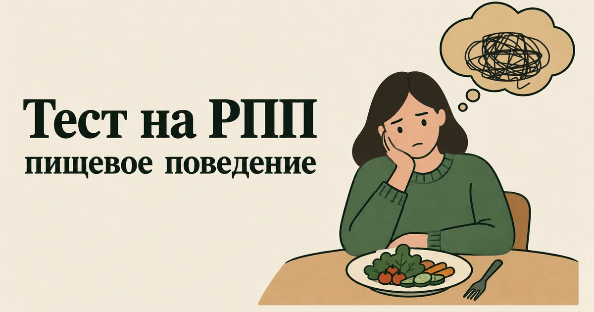

Тест на РПП: есть ли у вас признаки расстройства пищевого поведения
Обновлено: 16.09.2026 · 3 минуты на прохождение
Это самопроверка на признаки расстройства пищевого поведения (РПП): пятнадцать вопросов об отношениях с едой, весом и собственным телом. Результат — от 0 до 45 баллов и разбор, чем РПП отличается от диеты, какие бывают его виды и когда нужна помощь врача. Бесплатно, без регистрации, ответы остаются в вашем браузере.

Что с этим делать дальше. Балл — не диагноз, а точка отсчёта: смысл он приобретает в динамике, когда видно, растёт он или падает. В приложении AI Therapist есть дневник состояния, упражнения на основе приёмов КПТ и разговор с ИИ-психологом — можно пройти шкалу повторно через пару недель и сравнить.
Что такое РПП и чем оно отличается от диеты
Расстройства пищевого поведения — это состояния, при которых еда, вес и фигура начинают управлять мыслями, чувствами и поступками человека. Это не каприз и не недостаток силы воли, а психическое расстройство с серьёзными последствиями для тела, и оно лечится.
Граница с обычной диетой проходит не по тому, что человек ест, а по тому, какое место еда занимает в жизни. Диету можно прервать на праздник и спокойно вернуться к ней. При РПП правила жёсткие, их нарушение вызывает сильную тревогу или стыд, мысли о еде и теле занимают большую часть дня, а самооценка держится на цифре на весах.
Вопросы теста касаются основных видов РПП и того, что их объединяет:
- Нервная анорексия — сильное ограничение еды, страх набрать вес, искажённое восприятие своего тела.
- Нервная булимия — эпизоды переедания, после которых человек пытается «избавиться» от съеденного: вызывает рвоту, принимает слабительные, изнуряет себя тренировками или голодает.
- Компульсивное переедание — эпизоды, когда человек съедает очень много и не может остановиться, но без попыток избавиться от съеденного.
- Другие расстройства пищевого поведения — когда проявления серьёзные, но не укладываются точно ни в один из трёх видов. Это самая частая форма РПП, и она требует лечения так же, как «классические».
- Общее ядро — зависимость самооценки от веса и фигуры, вина после еды, скрытность, еда как способ справиться с эмоциями.
Расшифровка результата
Каждый ответ стоит от 0 до 3 баллов, сумма — от 0 до 45. Вопросы составлены нами, поэтому границы уровней заданы по смыслу пунктов, а не по статистике. Это ориентир, а не диагностический порог.
| Баллы | Уровень | Что это обычно значит |
|---|---|---|
| 0–10 | Отношения с едой спокойные | Еда и вес не управляют мыслями и настроением |
| 11–21 | Отдельные тревожные сигналы | Некоторые привычки и мысли уже похожи на нарушенное пищевое поведение |
| 22–32 | Выраженные признаки | Еда и тело заметно управляют жизнью — стоит обратиться к специалисту |
| 33–45 | Много признаков РПП | Картина похожа на расстройство пищевого поведения — нужна очная консультация врача |
Здесь общий балл особенно легко обманывает. Можно ответить «никогда» почти на всё и регулярно вызывать рвоту — и это уже серьёзнее любой суммы. Поэтому, если вы хоть иногда избавляетесь от съеденного, голодаете целыми днями или быстро теряете вес, обратитесь к врачу независимо от результата.
«Но у меня нормальный вес»
Это одно из самых опасных заблуждений о РПП. Многие люди с булимией и компульсивным перееданием имеют обычный или повышенный вес, а при анорексии тяжёлые осложнения начинаются раньше, чем вес становится «пугающим» со стороны. Подробно о видах РПП, осложнениях и лечении — в статье «Расстройства пищевого поведения: симптомы, виды и лечение». Британские клинические рекомендации NICE прямо запрещают специалистам решать, нужна ли помощь, по одному показателю вроде индекса массы тела или длительности болезни.
Поэтому ни в тесте, ни на этой странице нет цифр веса и «норм». Важно не то, сколько вы весите, а то, что происходит с вашими мыслями, чувствами и поведением вокруг еды.
Когда нужен врач без промедления
РПП — одно из психических расстройств с самыми серьёзными последствиями для тела. Обратитесь к врачу как можно скорее, а при резком ухудшении вызывайте скорую 112, если есть:
- обмороки, сильная слабость, головокружение при вставании;
- перебои в работе сердца, ощущение, что оно бьётся слишком медленно или неровно;
- регулярная рвота или приём слабительных и мочегонных;
- быстрая потеря веса за короткий срок;
- прекращение менструаций;
- отказ от еды или питья на протяжении дня и больше;
- мысли о смерти или о том, чтобы причинить себе вред.
Частая рвота и слабительные опасны не только сами по себе: они нарушают баланс калия и других солей в крови, что может привести к нарушениям ритма сердца. Это тот случай, когда нужно сдать анализы, даже если самочувствие кажется нормальным.
Как лечат РПП
РПП хорошо поддаются лечению, особенно если начать рано. Основа — психотерапия. Для взрослых с булимией и компульсивным перееданием лучше всего изучена когнитивно-поведенческая терапия, адаптированная под расстройства пищевого поведения. Подросткам с анорексией в первую очередь рекомендуют семейную терапию, в которой родители учатся помогать ребёнку. Лекарства как единственное лечение не используют.
При РПП обычно работает команда: психотерапевт или психиатр, терапевт или педиатр, который следит за состоянием тела, иногда диетолог, знающий, как работать с этим расстройством. Бесплатно начать можно с психиатра или психотерапевта по полису ОМС — как это сделать, разобрано в справочнике бесплатной помощи.
Что можно сделать уже сейчас
- Не садитесь на новую диету, чтобы «исправить» срывы. При переедании жёсткие ограничения чаще всего и запускают следующий срыв: голод и запреты делают его почти неизбежным. Регулярное питание — завтрак, обед, ужин и перекусы — один из первых шагов в лечении.
- Замечайте, что было перед эпизодом. Часто это не голод, а усталость, одиночество, тревога или стыд. Короткая запись «что случилось, что почувствовал, что сделал» помогает увидеть связь, которую изнутри не видно.
- Уберите лишние проверки тела. Многократное взвешивание, разглядывание себя в зеркале и измерения не успокаивают, а подпитывают тревогу о фигуре.
- Расскажите кому-то одному. РПП держится на секретности. Близкий человек, врач или психолог — не важно кто, важно перестать справляться в одиночку.
- Если еда стала способом справляться с чувствами, ищите другие. Разобраться, что за эмоции стоят за перееданием, помогает разбор о том, как справиться с тревогой, а если за этим стоит постоянная самокритика — статья о том, как повысить самооценку.
О еде и теле бывает стыдно говорить даже с самыми близкими. Здесь можно рассказать, что происходит, без оценок и советов «просто взять себя в руки» — анонимно и в любое время.
Частые вопросы
Можно ли по тесту узнать, есть ли у меня РПП?
Нет. Тест показывает, насколько еда, вес и фигура влияют на ваши мысли и поведение, но диагноз ставит только врач на очной консультации. Высокий балл — повод обратиться к психиатру или психотерапевту. А если вы вызываете рвоту, принимаете слабительные или быстро теряете вес, к врачу стоит идти независимо от результата.
Бывает ли РПП при нормальном весе?
Да, и нередко. Многие люди с булимией и компульсивным перееданием имеют обычный или повышенный вес, а опасные осложнения анорексии начинаются раньше, чем худоба становится заметной. Поэтому о расстройстве судят не по весу, а по тому, что происходит с мыслями, чувствами и поведением вокруг еды.
Чем РПП отличается от обычной диеты?
Диету можно спокойно прервать и продолжить, и она не определяет, как человек к себе относится. При РПП правила о еде жёсткие, их нарушение вызывает сильную тревогу, вину или стыд, мысли о еде и теле занимают большую часть дня, а самооценка зависит от веса и фигуры.
Насколько этому тесту можно доверять?
Это самопроверка, а не валидированная шкала: вопросы составлены нами по описанию расстройств пищевого поведения в международной классификации болезней, а границы уровней заданы по смыслу, без сравнения с населением. Результат стоит читать как повод присмотреться к себе и обсудить его со специалистом, а не как вывод о себе.
Материал подготовлен командой AI Therapist. Вопросы самопроверки составлены нами на основе описания расстройств пищевого поведения в МКБ-11 и клинических рекомендациях. Это не валидированная диагностическая шкала: она не сравнивает вас с населением, не ставит диагноз и не заменяет консультацию врача.
Источники: МКБ-11, ВОЗ — 6B80–6B82 «Нервная анорексия», «Нервная булимия», «Компульсивное переедание», NICE NG69 — Eating disorders: recognition and treatment, NHS — Eating disorders, NIMH — Eating Disorders.
Кто отвечает за содержание сайта и по каким правилам мы готовим материалы — на странице о проекте.